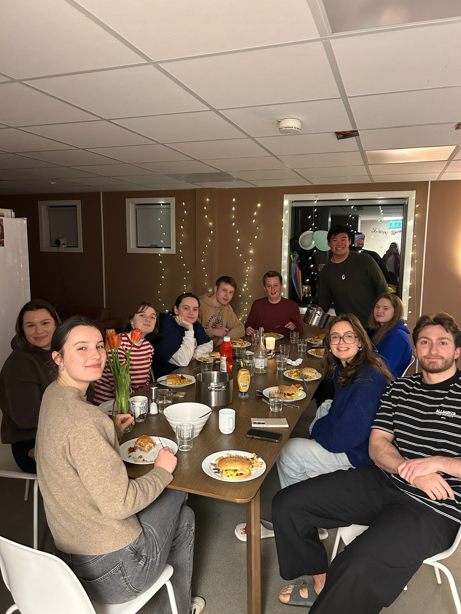

BERGEN
COMPLETE!
Fjords, trolls, thin ice, eggs benedict — and Léonie.
Next stop: back to Melbourne.

[ PHOTO OF JACK
BERGEN ERA
GOES HERE ]
PASSENGERJACK
GATEF21
SEAT21A
FLIGHTJA421
BOARDING21:00
CLASSHOME
MYSTERY PIECE FOUND! (4/5)
A strange little scrambled fragment.
Better hang on to it…